Fotos del cuarteto de los 80
Fotos del cuarteto de los 80
|
|
|
Fotos del cuarteto de los '80
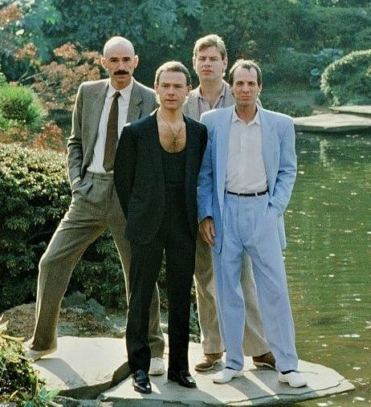 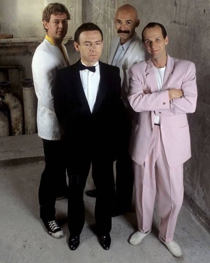 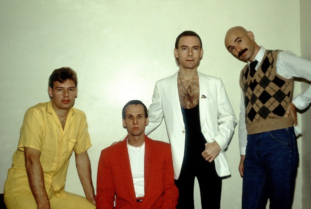
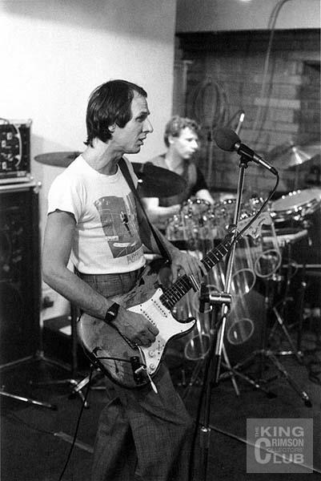 30 de abril del '81 en Moles Club, Bath (Inglaterra). Primera presentación de esta formación, cuando aún se llamaba Discipline, todavía no King Crimson.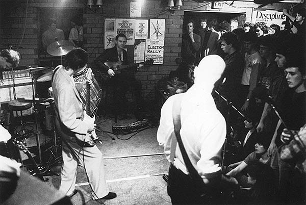
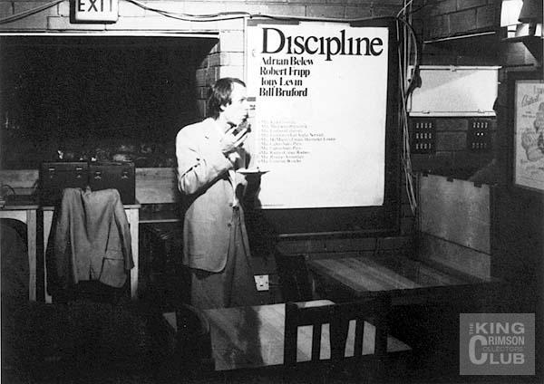 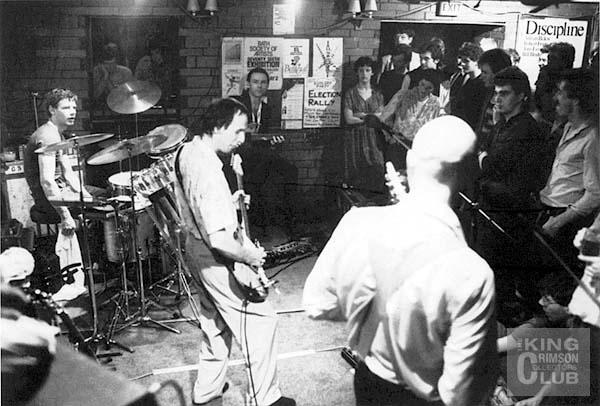
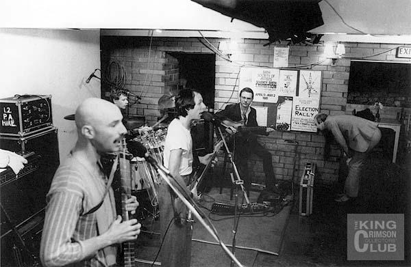 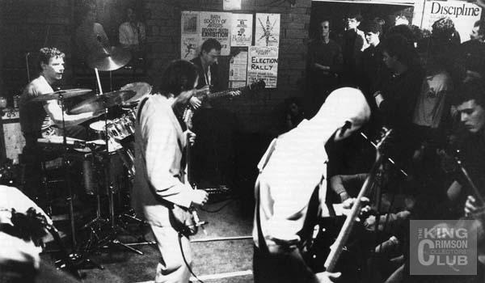 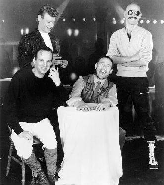 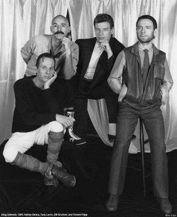 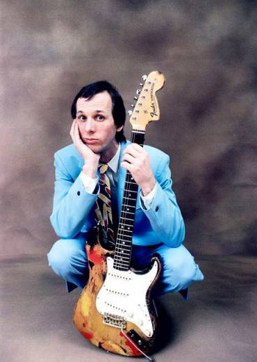 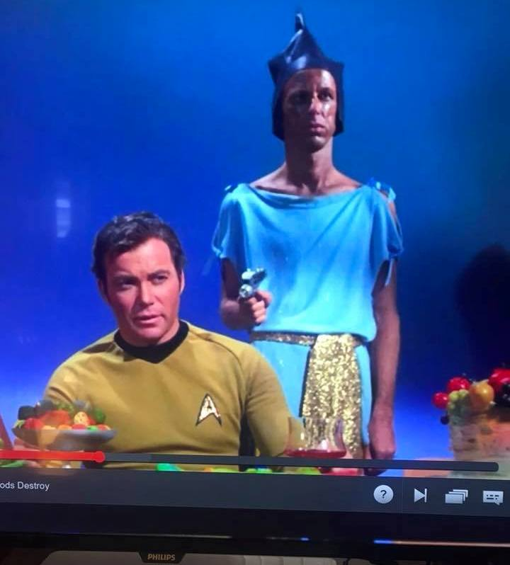 Antes de dedicarse a la música Belew incursionó en la actuación. En la foto de arriba se lo ve como extra en un episodio de la serie Star Treck. Por suerte cambió la "faser" por la guitarra (Ja!).
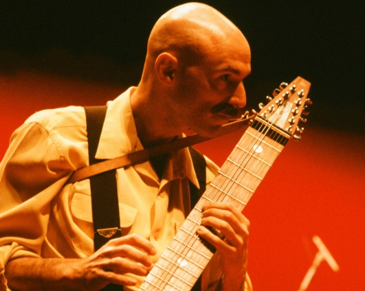 Utrecht (Holanda), 12 de octubre de 1981 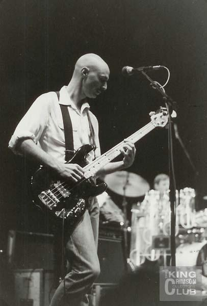 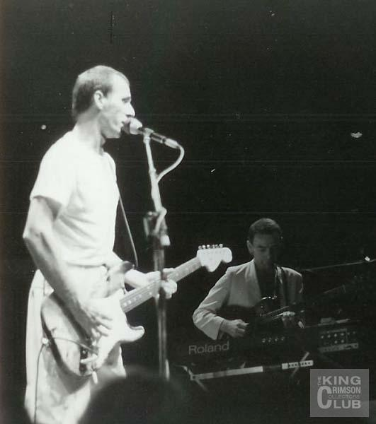 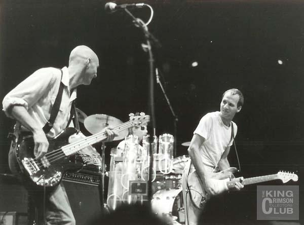 
TV española, 19 de octubre de 1981 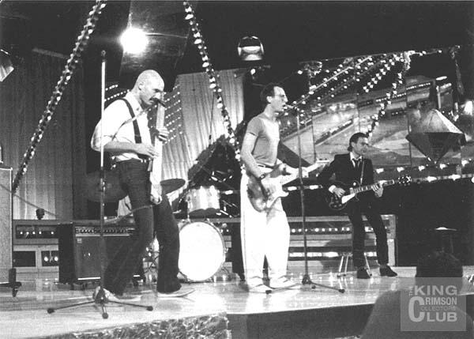 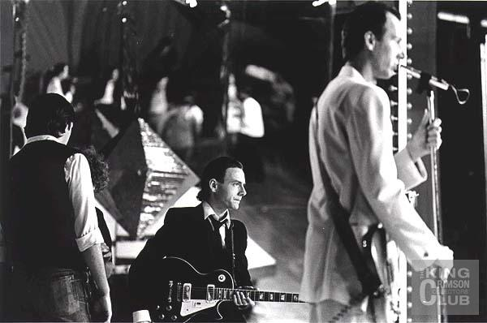 Show en ABC TV, Los Angeles (USA), 4 de diciembre de 1981 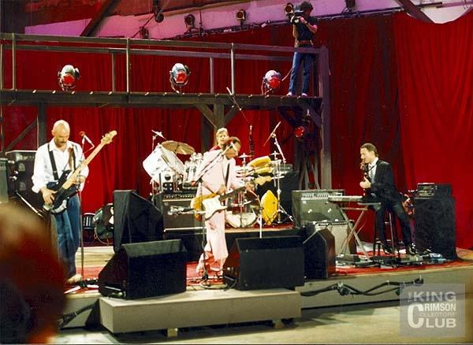 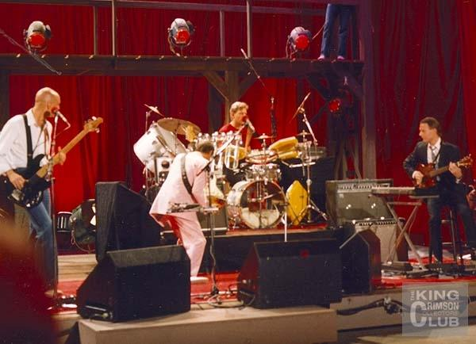 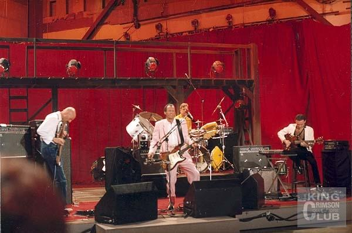 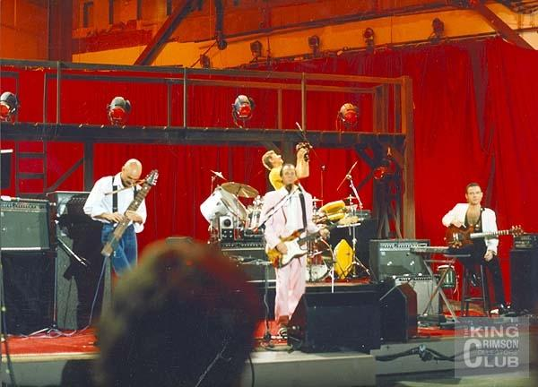 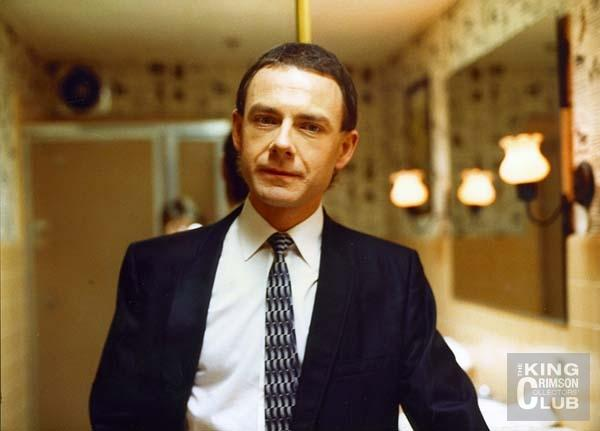 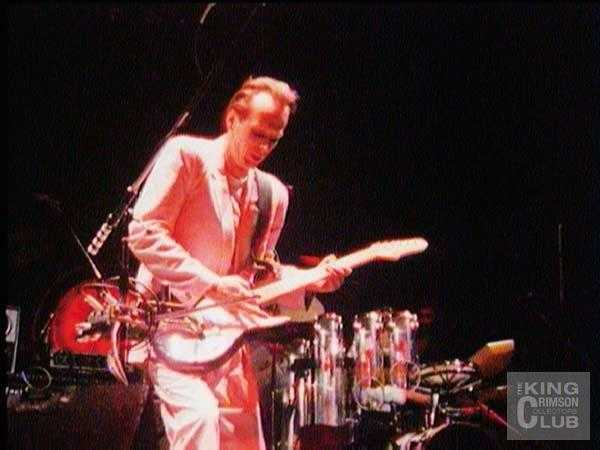 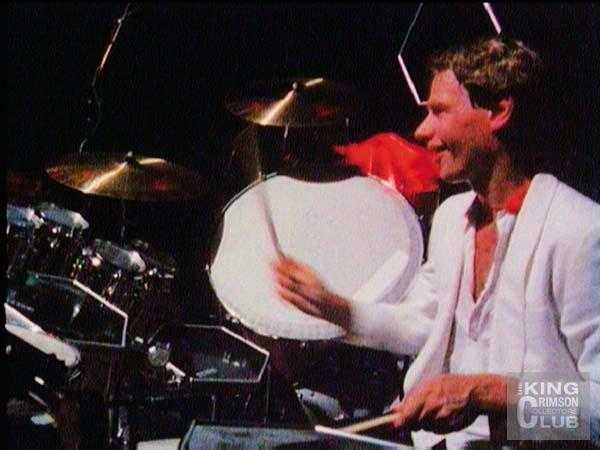
1982 Fotos del 26 de junio de 1984 en The Pier, Nueva York.
|